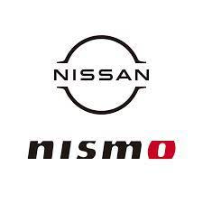
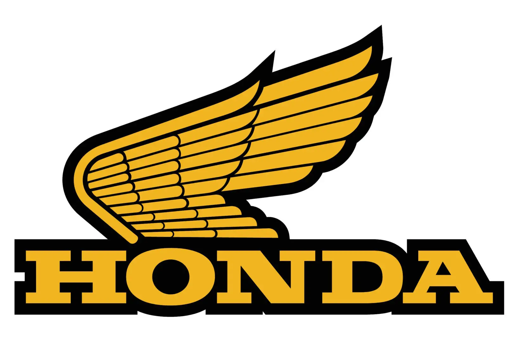
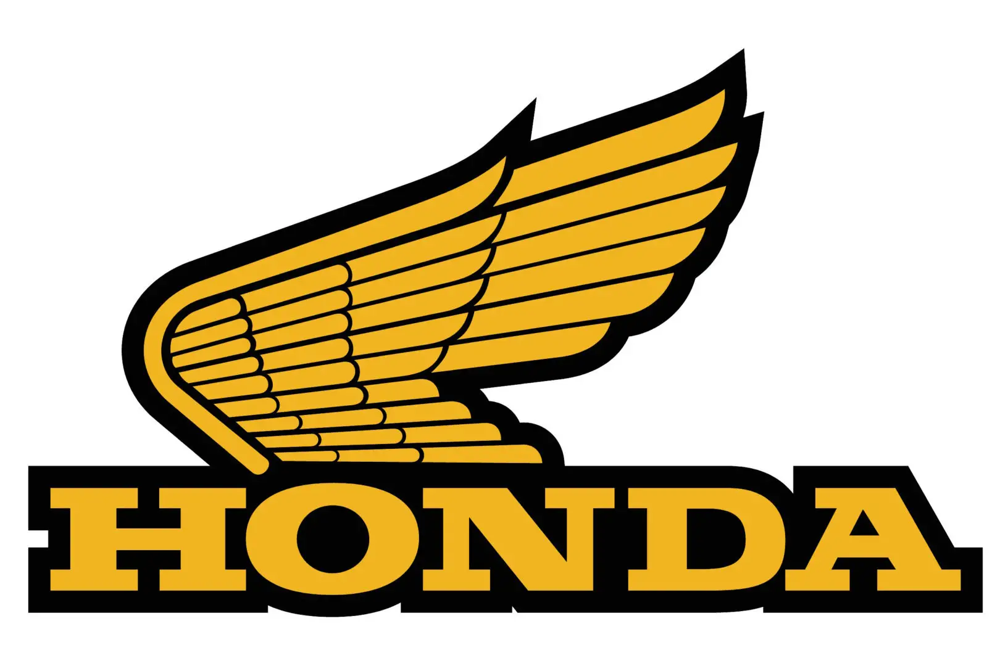

Fav Cars And Upgrades
the information below are recommended cars and parts to help your get the best out of you car

 

Car Parts
commonly changed parts to help get most of your car
- alternator
- calipers
- brakes
- motor mounts
- sparkplugs
Recommended Cars
- 2018 Nissian Altima SR
- 1999 Honda Civic Si DOHC VTEC
- 2000 Ford Mustang GT Deluxe Edition
- 2018 Nissian Maxima Midnight Edition
- 2018 Honda Civic Type R
History
list of history links
- honda
- Ford
- nissian